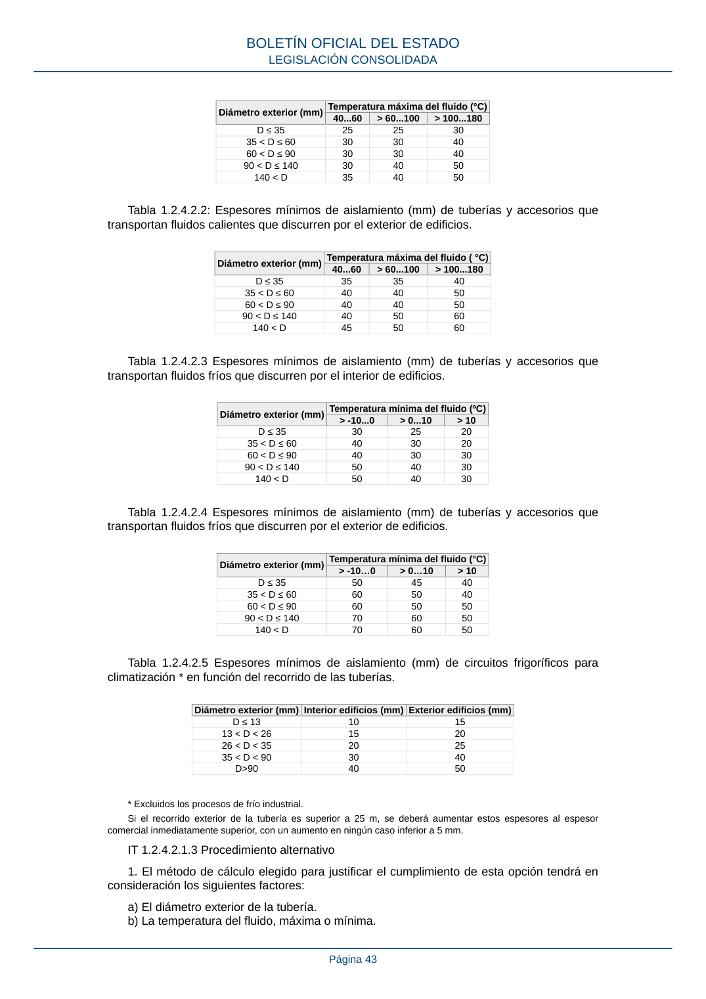

DB-HE2 RITE · edición 2022-08-02 · capa asociada
Documento RITE-asociada · SHA-256 del PDF ad1680c83bf4c7f5c656af1794c32ad0669ad9f36ac293737ff3f95177ff7b26
Página física 43 de 97.
Copia fiel del PDF fuente · Fuente oficial
Ficha de la disposición en la fuente oficial
Texto extraído y reorganizado: Basado en datos de la Agencia Estatal Boletín Oficial del Estado. PDF reproducido: Fuente de los datos: Agencia Estatal Boletín Oficial del Estado.
Formato: Texto de la página (Markdown)
Diámetro exterior (mm) Temperatura máxima del fluido (°C) 40...60 > 60...100 > 100...180 D ≤ 35 25 25 30 35 < D ≤ 60 30 30 40 60 < D ≤ 90 30 30 40 90 < D ≤ 140 30 40 50 140 < D 35 40 50 Tabla 1.2.4.2.2: Espesores mínimos de aislamiento (mm) de tuberías y accesorios que transportan fluidos calientes que discurren por el exterior de edificios. Diámetro exterior (mm) Temperatura máxima del fluido ( °C) 40...60 > 60...100 > 100...180 D ≤ 35 35 35 40 35 < D ≤ 60 40 40 50 60 < D ≤ 90 40 40 50 90 < D ≤ 140 40 50 60 140 < D 45 50 60 Tabla 1.2.4.2.3 Espesores mínimos de aislamiento (mm) de tuberías y accesorios que transportan fluidos fríos que discurren por el interior de edificios. Diámetro exterior (mm) Temperatura mínima del fluido (ºC) > -10...0 > 0...10 > 10 D ≤ 35 30 25 20 35 < D ≤ 60 40 30 20 60 < D ≤ 90 40 30 30 90 < D ≤ 140 50 40 30 140 < D 50 40 30 Tabla 1.2.4.2.4 Espesores mínimos de aislamiento (mm) de tuberías y accesorios que transportan fluidos fríos que discurren por el exterior de edificios. Diámetro exterior (mm) Temperatura mínima del fluido (°C) > -10…0 > 0…10 > 10 D ≤ 35 50 45 40 35 < D ≤ 60 60 50 40 60 < D ≤ 90 60 50 50 90 < D ≤ 140 70 60 50 140 < D 70 60 50 Tabla 1.2.4.2.5 Espesores mínimos de aislamiento (mm) de circuitos frigoríficos para climatización * en función del recorrido de las tuberías. Diámetro exterior (mm) Interior edificios (mm) Exterior edificios (mm) D ≤ 13 10 15 13 < D < 26 15 20 26 < D < 35 20 25 35 < D < 90 30 40 D>90 40 50 * Excluidos los procesos de frío industrial. Si el recorrido exterior de la tubería es superior a 25 m, se deberá aumentar estos espesores al espesor comercial inmediatamente superior, con un aumento en ningún caso inferior a 5 mm. IT 1.2.4.2.1.3 Procedimiento alternativo 1. El método de cálculo elegido para justificar el cumplimiento de esta opción tendrá en consideración los siguientes factores: a) El diámetro exterior de la tubería. b) La temperatura del fluido, máxima o mínima. BOLETÍN OFICIAL DEL ESTADO LEGISLACIÓN CONSOLIDADA Página 43

Datos candidatos: compruebe celdas y notas en el PDF.